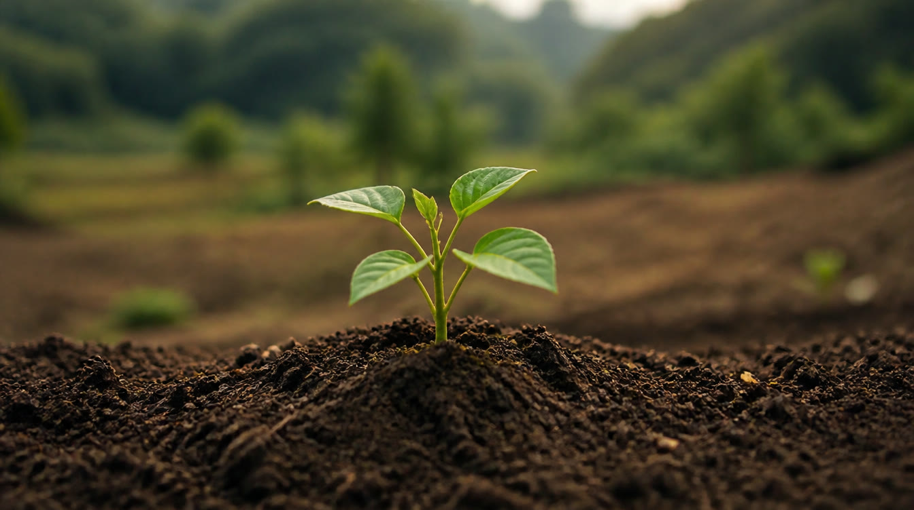
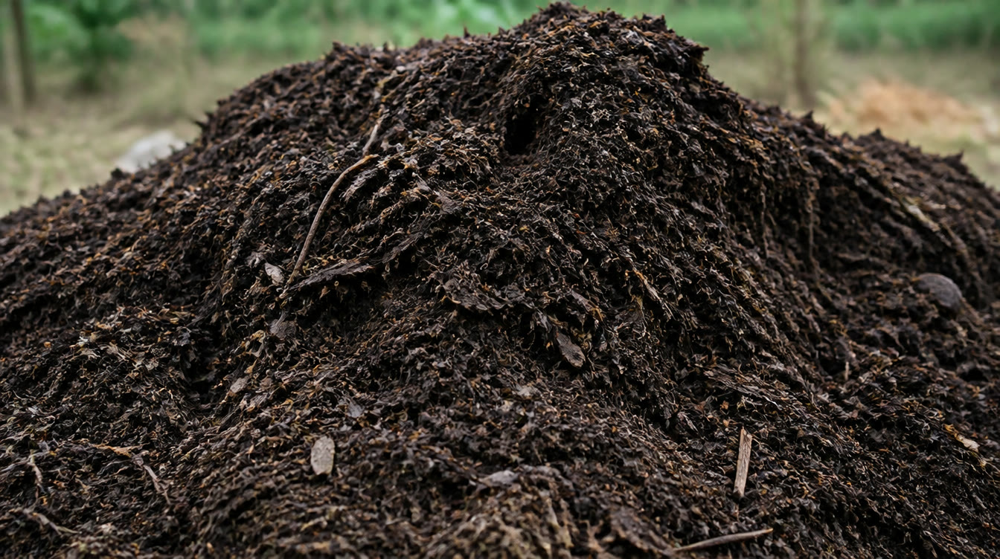
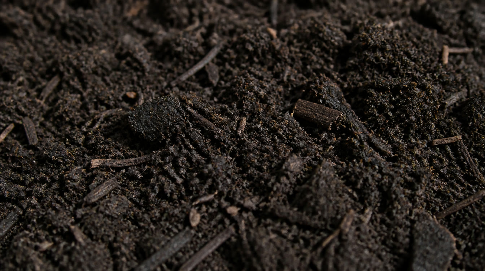
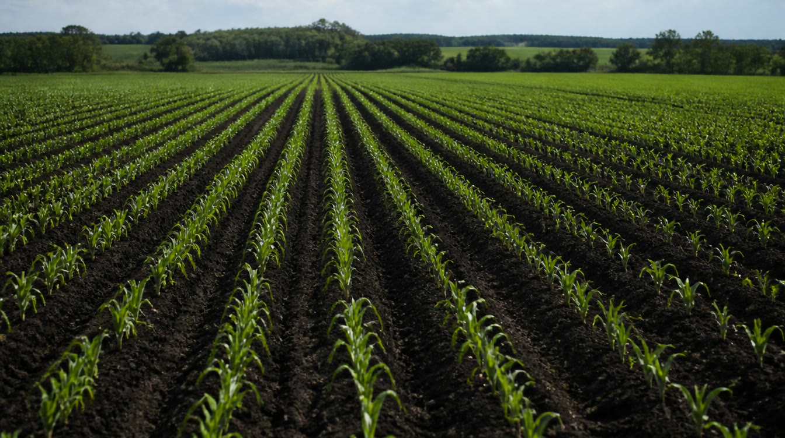

Recebemos resíduos e devolvemos ao solo o que ele perde — carbono e minerais. Para você, mais produtividade na lavoura e destino responsável para o descarte.
Falar com a equipe Conhecer o serviço

Recebemos resíduos orgânicos e os transformamos em insumo, com responsabilidade e rastreabilidade.
Produzimos compostos e condicionadores que repõem matéria orgânica, carbono e minerais.
Diagnóstico e suporte técnico de solo e nutrição, do plantio ao resultado.

Melhora a estrutura do solo, a retenção de água e a disponibilidade de nutrientes.
Repõem os minerais e a matéria orgânica que o cultivo retira do território.
Nutrição para as culturas, produzida a partir de materiais que voltam ao sistema.

Culturas anuais, fruticultura e agrofloresta que buscam solo mais fértil e produção sustentável.
Indústrias e agroindústrias que querem dar um destino ambientalmente responsável aos resíduos.
Projetos de recuperação de áreas e melhoria da saúde do solo em escala territorial.
Fale com a equipe e encontre o melhor caminho — para o seu resíduo ou para a sua lavoura.
Falar pelo WhatsAppA Carbono Circular reúne o conhecimento e a estrutura de um grupo dedicado ao solo e à circularidade.